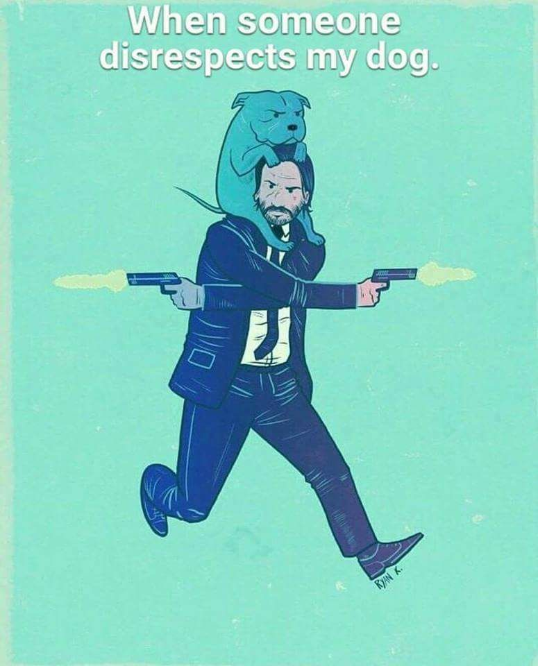

Our team is led by clinical directors Nikki Hoad and Melanie Norris. Our experienced vets have special interests and additional qualifications, holding certificates in cardiology, soft tissue and orthopaedic surgery and internal medicine. Our dedicated team of nurses pride themselves on looking after our patients as if they were their own pets. We are also proud to be a nurse training practice. Our facilities The practice has a fully equipped preparation room, operating theatre, modern anaesthetic and monitoring equipment and our in-house laboratory allows us to run blood and urine samples for rapid results. We have up-to-date diagnostic equipment such as an X-ray machine, ultrasound scanner and endoscope allowing us to quickly recognise and treat your pet’s condition. With separate dog and cat wards and a separate isolation ward, our nurses are able to give the best possible nursing care whilst your pets are hospitalised within the practice. We are also a Cat Friendly Clinic. We work alongside the emergency veterinary service providers Vets Now. They work at hospital to see urgent cases outside normal hours and look after our patients that need to be hospitalised overnight. This means sick animals do not need to be moved at the end of the working day but have round the clock veterinary care on site, giving peace of mind to worried owners.
Here at Veterinary Hospital, we hold RCVS Small Animal Veterinary Hospital accreditation at our Winchester surgery and RCVS Core Standards at our Overton branch, which are the schemes most appropriate for us.
For this accreditation, we have shown total compliance with all the legal and health & safety requirements necessary for our work. This means that, among other things, we have: Access to 24-hour emergency cover for patients Appropriately trained staff (veterinary qualifications and insurance are checked) Maintained standards of cleanliness and hygiene Ensured clients are given estimates of costs of treatments and consent to procedures undertaken What is RCVS General Practice accreditation? These standards are specifically for practices like us because we treat small animal and exotic patients. As well as complying with RCVS Core Standards around legal and health & safety requirements, emergency cover (and more), we strive for continuous improvement and: Have a system for monitoring the outcome of treatments Show ongoing commitment to education and training Keep premises clean and well maintained Have a policy for communicating with clients and looking at feedback Have access to laboratory facilities for diagnostic testing
To receive this, we have met RCVS Core and General Practice Standards, which cover legal and health & safety issues, among other requirements. On top of that, we also have: Nursing staff on the premises 24-hours Veterinary surgeons available 24-hours Demonstrated our commitment to maintain and improve clinical standard by monitoring performance and the outcome of treatments Specialist equipment, such as specific diagnostic equipment (ECG and ultrasound) Undergone meticulous inspection of our premises and facilities, with special emphasis on cleanliness and sterility
Blood test
X-ray diagnostic
USD
| indicator | dog | cat |
|---|---|---|
| AB | 25-40 | 26-40 |
| TP | 55-77 | 58-76 |
| Obil | 0.5--10.0 | 0.5--10.0 |
| ALT | 70 | 75 |
| AST | 75 | 50 |
| Alp | 100 | 70 |
| Glu | 4.4-6.5 | 3.6-6.5 |
| Bun | 2.5-8.6 | 5.5-11.0 |
| Crea | 50-120 | 50-160 |
| Ggt | 6.9 | 6.9 |
| Chol | 2.9-6.0 | 1.9-6.5 |
| Ca | 2.0-3.2 | 2.0-2.7 |
| P | 0.8-2.4 | 1.3-2.4 |
| K | 4.1-55 | 3.8-5.3 |
| CK | 10-300 | 10-450 |
| indicator | dog | cat |
|---|---|---|
| WBC | 6.5-12.0 | 5.0-14.0 |
| RBC | 5.4-7.8 | 5.8-10.7 |
| Hb | 130-190 | 100-150 |
| HCT | 37-54 | 30-47 |
| MCV | 70 | 50 |
| MCH | 20.0 | 17.5 |
| MCHC | 285 | 350 |
| RDW | 12.8% | 11.0% |
| Plt | 250x10-9/L | 200x10-9/L |
| MPV | 10.1 | 6.9 |